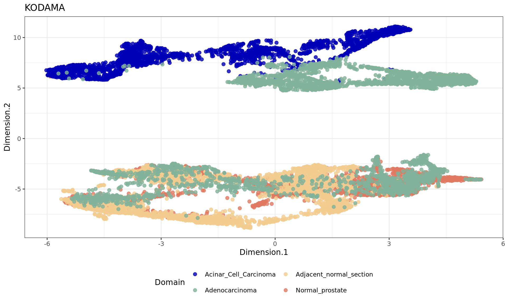
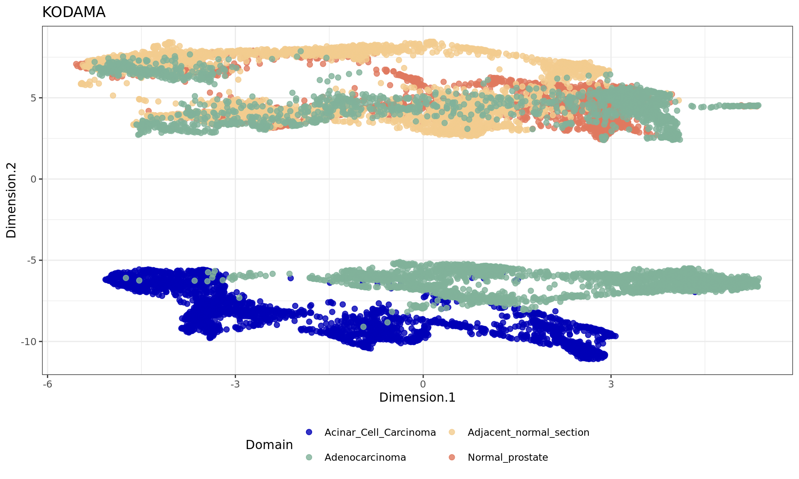
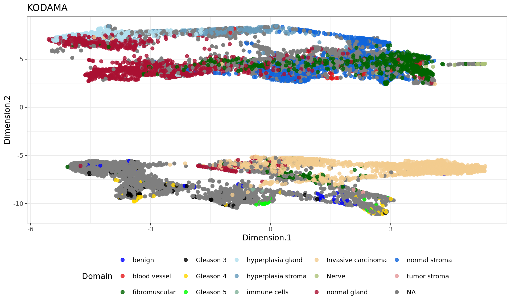

About
Last updated: 2024-07-11
Checks: 7 0
Knit directory: KODAMA-Analysis/
This reproducible R Markdown analysis was created with workflowr (version 1.7.1). The Checks tab describes the reproducibility checks that were applied when the results were created. The Past versions tab lists the development history.
Great! Since the R Markdown file has been committed to the Git repository, you know the exact version of the code that produced these results.
Great job! The global environment was empty. Objects defined in the global environment can affect the analysis in your R Markdown file in unknown ways. For reproduciblity it’s best to always run the code in an empty environment.
The command set.seed(20240618) was run prior to running
the code in the R Markdown file. Setting a seed ensures that any results
that rely on randomness, e.g. subsampling or permutations, are
reproducible.
Great job! Recording the operating system, R version, and package versions is critical for reproducibility.
Nice! There were no cached chunks for this analysis, so you can be confident that you successfully produced the results during this run.
Great job! Using relative paths to the files within your workflowr project makes it easier to run your code on other machines.
Great! You are using Git for version control. Tracking code development and connecting the code version to the results is critical for reproducibility.
The results in this page were generated with repository version 8f64901. See the Past versions tab to see a history of the changes made to the R Markdown and HTML files.
Note that you need to be careful to ensure that all relevant files for
the analysis have been committed to Git prior to generating the results
(you can use wflow_publish or
wflow_git_commit). workflowr only checks the R Markdown
file, but you know if there are other scripts or data files that it
depends on. Below is the status of the Git repository when the results
were generated:
Ignored files:
Ignored: .Rhistory
Ignored: .Rproj.user/
Unstaged changes:
Deleted: data/Moffitt_and_Bambah-Mukku_et_al_merfish_all_cells.csv
Note that any generated files, e.g. HTML, png, CSS, etc., are not included in this status report because it is ok for generated content to have uncommitted changes.
These are the previous versions of the repository in which changes were
made to the R Markdown (analysis/Prostate.Rmd) and HTML
(docs/Prostate.html) files. If you’ve configured a remote
Git repository (see ?wflow_git_remote), click on the
hyperlinks in the table below to view the files as they were in that
past version.
| File | Version | Author | Date | Message |
|---|---|---|---|---|
| Rmd | 8f64901 | Stefano Cacciatore | 2024-07-11 | Start my new project |
| html | 3828e8c | Stefano Cacciatore | 2024-07-11 | Build site. |
| Rmd | 31ff3c4 | Stefano Cacciatore | 2024-07-11 | Start my new project |
| html | d652bc6 | GitHub | 2024-07-08 | Update Prostate.html |
| html | cac859c | GitHub | 2024-07-04 | Update Prostate.html |
| html | ee4ee17 | GitHub | 2024-06-19 | Add files via upload |
| Rmd | 615fc05 | GitHub | 2024-06-19 | Add files via upload |
Introduction
The data used in this analysis come from the Visium database, a reference resource for spatial transcriptomics data. This database provides detailed information on gene expression in various tissue contexts, offering high-resolution spatial data.
For this tutorial, we focus on different types of prostate tissues, including normal prostate, adenocarcinoma, acinar cell carcinoma, and adjacent normal sections. These data are crucial for understanding the variations in gene expression between healthy and cancerous tissues and for identifying potential diagnostic and therapeutic markers.
The data can be downloaded using the following script: Prostate_download.sh. This script facilitates access to the raw data, which will then be preprocessed and analyzed in the subsequent steps of our pipeline.
Preprocessing
This section details the preprocessing of spatial transcriptomics data, which is a crucial step for cleaning and preparing the data for further analysis.
Loading Libraries and Defining Tissue Types
library(SpatialExperiment)
library(scater)
library(nnSVG)
library(SPARK)
library(harmony)
library(scuttle)
library(BiocSingular)
tissues <- c("Normal_prostate",
"Acinar_Cell_Carcinoma",
"Adjacent_normal_section",
"Adenocarcinoma")Begin by loading the necessary libraries for the analysis. Next, define the different types of prostate tissues to be studied: normal prostate, acinar cell carcinoma, adjacent normal sections, and adenocarcinoma.
Reading Visium Data
dir <- "C:/Users/T0087231/Documents/Prostate/"
address <- file.path(dir, tissues, "")
spe <- read10xVisium(address, tissues,
type = "sparse", data = "raw",
images = "lowres", load = FALSE)Specify the directory where the data is saved and load the Visium data for the defined tissue types. The data is read in as sparse matrices, with low-resolution images.
Saving Preprocessed Data
To facilitate access to the preprocessed data and avoid repeating the
preprocessing each time, save the spe object in an RData
file.
# Saving the preprocessed data in an RData file
save(spe, file = "C:/Users/T0087231/Documents/data/prostate.RData")This allows loading the preprocessed data directly without having to redo the preprocessing each time.
Loading Preprocessed Data
load("C:/Users/T0087231/Documents/data/prostate.RData")
metaData <- SingleCellExperiment::colData(spe)
expr <- SingleCellExperiment::counts(spe)
sample_names <- unique(colData(spe)$sample_id)Load the preprocessed data and extract the metadata and gene expression counts.
Filtering Tissue Spots and Identifying Mitochondrial Genes
spe <- spe[, colData(spe)$in_tissue]
# Identify mitochondrial genes
is_mito <- grepl("(^MT-)|(^mt-)", rowData(spe)$gene_name)
table(is_mito)< table of extent 0 >Filter the spots located in the tissue and identify mitochondrial genes, which are often used as quality indicators.
Calculating Quality Control (QC) Metrics per Spot
# Calculate per-spot QC metrics
spe <- addPerCellQC(spe, subsets = list(mito = is_mito))
# Select QC thresholds
qc_lib_size <- colData(spe)$sum < 500
qc_detected <- colData(spe)$detected < 250
qc_mito <- colData(spe)$subsets_mito_percent > 30
qc_cell_count <- colData(spe)$cell_count > 12
# Spots to discard
discard <- qc_lib_size | qc_detected | qc_mito | qc_cell_count
if (length(discard) > 0) {
table(discard)
colData(spe)$discard <- discard
# Filter low-quality spots
spe <- spe[, !colData(spe)$discard]
}
dim(spe)[1] 36945 13417Calculate several QC metrics per spot, such as library size, number of detected genes, percentage of mitochondrial genes, and cell count. Define thresholds for these metrics and filter out low-quality spots.
Filtering Genes
colnames(rowData(spe)) <- "gene_name"
spe <- filter_genes(
spe,
filter_genes_ncounts = 2, # Minimum counts
filter_genes_pcspots = 0.5, # Minimum percentage of spots
filter_mito = TRUE # Filter mitochondrial genes
)
dim(spe)[1] 12527 13417Filter genes based on the number of counts and the percentage of spots in which they are present. Mitochondrial genes are also filtered out.
Adjusting Spatial Coordinates
xy <- spatialCoords(spe)
samples <- unique(colData(spe)$sample_id)
for (j in 1:length(samples)) {
sel <- samples[j] == colData(spe)$sample_id
xy[sel, 1] <- spatialCoords(spe)[sel, 1] + 25000 * (j - 1)
}
spatialCoords(spe) <- xyAdjust the spatial coordinates of each sample to separate them visually, facilitating data analysis and visualization.
Normalizing Counts
spe <- computeLibraryFactors(spe)
spe <- logNormCounts(spe)normalize the counts using library size factors and apply a logarithmic transformation to obtain data ready for more precise analysis.
This preprocessing process cleans and normalizes the spatial transcriptomics data, ensuring high-quality data ready for subsequent analyses.
Feature Selection with SPARK
After preprocessing the data, the next step involves feature selection using SPARK, which is crucial for identifying significant genes across different tissue samples.
pvalue_mat <- matrix(NA, nrow = nrow(spe), ncol = length(sample_names))
rownames(pvalue_mat) <- rownames(rowData(spe))
# Perform SPARK analysis for each sample
for (i in 1:length(sample_names)) {
sel <- colData(spe)$sample_id == sample_names[i]
spe_sub <- spe[, sel]
sparkX <- sparkx(logcounts(spe_sub), spatialCoords(spe_sub), numCores = 1, option = "mixture")
pvalue_mat[rownames(sparkX$res_mtest), i] <- sparkX$res_mtest$combinedPval
print(sample_names[i])
}## ===== SPARK-X INPUT INFORMATION ====
## number of total samples: 2543
## number of total genes: 12519
## Running with single core, may take some time
## Testing With Projection Kernel
## Testing With Gaussian Kernel 1
## Testing With Gaussian Kernel 2
## Testing With Gaussian Kernel 3
## Testing With Gaussian Kernel 4
## Testing With Gaussian Kernel 5
## Testing With Cosine Kernel 1
## Testing With Cosine Kernel 2
## Testing With Cosine Kernel 3
## Testing With Cosine Kernel 4
## Testing With Cosine Kernel 5
[1] "Normal_prostate"
## ===== SPARK-X INPUT INFORMATION ====
## number of total samples: 3043
## number of total genes: 12524
## Running with single core, may take some time
## Testing With Projection Kernel
## Testing With Gaussian Kernel 1
## Testing With Gaussian Kernel 2
## Testing With Gaussian Kernel 3
## Testing With Gaussian Kernel 4
## Testing With Gaussian Kernel 5
## Testing With Cosine Kernel 1
## Testing With Cosine Kernel 2
## Testing With Cosine Kernel 3
## Testing With Cosine Kernel 4
## Testing With Cosine Kernel 5
[1] "Acinar_Cell_Carcinoma"
## ===== SPARK-X INPUT INFORMATION ====
## number of total samples: 3460
## number of total genes: 12521
## Running with single core, may take some time
## Testing With Projection Kernel
## Testing With Gaussian Kernel 1
## Testing With Gaussian Kernel 2
## Testing With Gaussian Kernel 3
## Testing With Gaussian Kernel 4
## Testing With Gaussian Kernel 5
## Testing With Cosine Kernel 1
## Testing With Cosine Kernel 2
## Testing With Cosine Kernel 3
## Testing With Cosine Kernel 4
## Testing With Cosine Kernel 5
[1] "Adjacent_normal_section"
## ===== SPARK-X INPUT INFORMATION ====
## number of total samples: 4371
## number of total genes: 12525
## Running with single core, may take some time
## Testing With Projection Kernel
## Testing With Gaussian Kernel 1
## Testing With Gaussian Kernel 2
## Testing With Gaussian Kernel 3
## Testing With Gaussian Kernel 4
## Testing With Gaussian Kernel 5
## Testing With Cosine Kernel 1
## Testing With Cosine Kernel 2
## Testing With Cosine Kernel 3
## Testing With Cosine Kernel 4
## Testing With Cosine Kernel 5
[1] "Adenocarcinoma"pvalue_mat=pvalue_mat[!is.na(rowSums(pvalue_mat)),]
oo=order(apply(pvalue_mat,1,function(x) mean(-log(x))),decreasing = TRUE)
top=rownames(pvalue_mat)[oo]Principal Component Analysis (PCA)
After feature selection, principal component analysis (PCA) is performed to explore the variance in the dataset and visualize sample relationships.
sample_id=colData(spe)$sample_id
library(ggplot2)
# Run PCA with top selected genes
spe <- runPCA(spe, subset_row = top[1:3000], scale = TRUE)
# Run Harmony to adjust for batch effects
spe <- RunHarmony(spe, group.by.vars = "sample_id", lambda = NULL)
# Visualize PCA and Harmony results
plot(reducedDim(spe, type = "PCA"), col = as.factor(colData(spe)$sample_id), main = "PCA")
| Version | Author | Date |
|---|---|---|
| 3828e8c | Stefano Cacciatore | 2024-07-11 |
plot(reducedDim(spe, type = "HARMONY"), col = as.factor(colData(spe)$sample_id), main = "Harmony")
| Version | Author | Date |
|---|---|---|
| 3828e8c | Stefano Cacciatore | 2024-07-11 |
pca=reducedDim(spe,type = "HARMONY")[,1:50]
samples=as.factor(colData(spe)$sample_id)
xy=as.matrix(spatialCoords(spe))
data=t(logcounts(spe))Pathology Data Analysis
Loading Pathology Data
To begin the pathology data analysis, load the corresponding pathology data for adenocarcinoma samples. Ensure to replace the file path with the correct location of your data.
patho <- read.csv("C:/Users/T0087231/Documents/Prostate/Adenocarcinoma/outs/Pathology.csv")Processing Pathology Data
The processing involves creating row names and associating pathology information with the corresponding columns in the spe object.
rownames(patho) <- patho[,1]
pathology <- rep(NA, ncol(spe))
sel <- colData(spe)$sample_id == "Adenocarcinoma"
pathology[sel] <- patho[rownames(colData(spe))[sel], "Pathology"]
pathology[pathology == ""] <- NA
pathology <- factor(pathology, levels = c("Invasive carcinoma",
"Blood vessel",
"Fibro-muscular tissue",
"Fibrous tissue",
"Immune Cells",
"Nerve",
"Normal gland"))Visualization of Pathology Data
Assign specific colors to each pathology category and visualize the samples on a reduced dimension map (HARMONY), with each point colored according to its pathology category.
col_pathology <- c("#0000ff", "#e41a1c", "#006400", "#000000", "#ffd700", "#00ff00", "#b2dfee")
plot(reducedDim(spe, type = "HARMONY"), pch = 20, col = col_pathology[pathology])
Running KODAMA for Analysis
The next step is running KODAMA, a method for dimensionality reduction and visualization.
library(KODAMAextra)
spe <- RunKODAMAmatrix(spe,
reduction = "HARMONY",
FUN = "PLS",
landmarks = 100000,
splitting = 300,
f.par.pls = 50,
spatial.resolution = 0.4,
n.cores = 4)socket cluster with 4 nodes on host 'localhost'
================================================================================[1] "Finished parallel computation"
[1] "Calculation of dissimilarity matrix..."
================================================================================config <- umap.defaults
config$n_threads = 4
config$n_sgd_threads = "auto"
spe=RunKODAMAvisualization(spe,method="UMAP",config=config)
plot(reducedDim(spe,type = "KODAMA"),col=as.factor(colData(spe)$sample_id))
plot(reducedDim(spe,type = "KODAMA"),col=pathology)
This extended analysis includes principal component analysis (PCA), pathology data analysis, and the application of KODAMA for dimensionality reduction and visualization, enhancing the understanding of spatial transcriptomics data in different prostate tissue types.
GSVA Enrichment Analysis with MSigDB
To explore enriched biological processes in our spatial transcriptomics data, we employ Gene Set Variation Analysis (GSVA) using MSigDB gene sets as a reference. To download the necessary data, please follow the steps provided at this link and create an account if required.
Loading Packages and Data
We start by loading the necessary packages and preparing our gene data for analysis:
library("GSVA")
library("GSA")
genes <- as.matrix(logcounts(spe))
t <- rowData(spe)$gene_name
selt <- ave(1:length(t), t, FUN = length)
genes <- genes[selt == 1, ]
rownames(genes) <- t[selt == 1]Loading MSigDB Gene Sets
Next, we load gene sets from the MSigDB database to identify relevant biological pathways and cellular processes:
geneset <- GSA.read.gmt("C:/Users/T0087231/Documents/Genesets/msigdb_v2023.2.Hs_GMTs/h.all.v2023.2.Hs.symbols.gmt")12345678910111213141516171819202122232425262728293031323334353637383940414243444546474849501
2
3
4
5
6
7
8
9
10
11
12
13
14
15
16
17
18
19
20
21
22
23
24
25
26
27
28
29
30
31
32
33
34
35
36
37
38
39
40
41
42
43
44
45
46
47
48
49names(geneset$genesets) <- geneset$geneset.names
genesets = geneset$genesetsGSVA Parameters and Enrichment Score Calculation
Finally, we define parameters for GSVA analysis and calculate enrichment scores for each MSigDB gene set:
gsvapar <- gsvaParam(genes, genesets, maxDiff = TRUE)
gsva_es <- gsva(gsvapar)Estimating GSVA scores for 50 gene sets.
Estimating ECDFs with Gaussian kernels
| | | 0% | |= | 2% | |=== | 4% | |==== | 6% | |====== | 8% | |======= | 10% | |======== | 12% | |========== | 14% | |=========== | 16% | |============= | 18% | |============== | 20% | |=============== | 22% | |================= | 24% | |================== | 26% | |==================== | 28% | |===================== | 30% | |====================== | 32% | |======================== | 34% | |========================= | 36% | |=========================== | 38% | |============================ | 40% | |============================= | 42% | |=============================== | 44% | |================================ | 46% | |================================== | 48% | |=================================== | 50% | |==================================== | 52% | |====================================== | 54% | |======================================= | 56% | |========================================= | 58% | |========================================== | 60% | |=========================================== | 62% | |============================================= | 64% | |============================================== | 66% | |================================================ | 68% | |================================================= | 70% | |================================================== | 72% | |==================================================== | 74% | |===================================================== | 76% | |======================================================= | 78% | |======================================================== | 80% | |========================================================= | 82% | |=========================================================== | 84% | |============================================================ | 86% | |============================================================== | 88% | |=============================================================== | 90% | |================================================================ | 92% | |================================================================== | 94% | |=================================================================== | 96% | |===================================================================== | 98% | |======================================================================| 100%
sessionInfo()R version 4.3.3 (2024-02-29 ucrt)
Platform: x86_64-w64-mingw32/x64 (64-bit)
Running under: Windows 10 x64 (build 19045)
Matrix products: default
locale:
[1] LC_COLLATE=English_United States.utf8
[2] LC_CTYPE=English_United States.utf8
[3] LC_MONETARY=English_United States.utf8
[4] LC_NUMERIC=C
[5] LC_TIME=English_United States.utf8
time zone: Africa/Johannesburg
tzcode source: internal
attached base packages:
[1] parallel stats4 stats graphics grDevices utils datasets
[8] methods base
other attached packages:
[1] GSA_1.03.3 GSVA_1.50.5
[3] KODAMAextra_1.0 e1071_1.7-14
[5] doParallel_1.0.17 iterators_1.0.14
[7] foreach_1.5.2 KODAMA_3.1
[9] umap_0.2.10.0 Rtsne_0.17
[11] minerva_1.5.10 BiocSingular_1.18.0
[13] harmony_1.2.0 Rcpp_1.0.12
[15] SPARK_1.1.1 nnSVG_1.6.4
[17] scater_1.30.1 ggplot2_3.5.1
[19] scuttle_1.12.0 SpatialExperiment_1.12.0
[21] SingleCellExperiment_1.24.0 SummarizedExperiment_1.32.0
[23] Biobase_2.62.0 GenomicRanges_1.54.1
[25] GenomeInfoDb_1.38.8 IRanges_2.36.0
[27] S4Vectors_0.40.2 BiocGenerics_0.48.1
[29] MatrixGenerics_1.14.0 matrixStats_1.3.0
[31] workflowr_1.7.1
loaded via a namespace (and not attached):
[1] later_1.3.2 bitops_1.0-7
[3] tibble_3.2.1 R.oo_1.26.0
[5] graph_1.80.0 matlab_1.0.4.1
[7] XML_3.99-0.17 lifecycle_1.0.4
[9] edgeR_4.0.16 rprojroot_2.0.4
[11] processx_3.8.4 lattice_0.22-6
[13] magrittr_2.0.3 limma_3.58.1
[15] sass_0.4.9 rmarkdown_2.27
[17] jquerylib_0.1.4 yaml_2.3.8
[19] httpuv_1.6.15 askpass_1.2.0
[21] reticulate_1.38.0 cowplot_1.1.3
[23] pbapply_1.7-2 DBI_1.2.3
[25] abind_1.4-5 zlibbioc_1.48.2
[27] R.utils_2.12.3 RCurl_1.98-1.14
[29] pracma_2.4.4 git2r_0.33.0
[31] GenomeInfoDbData_1.2.11 ggrepel_0.9.5
[33] irlba_2.3.5.1 RSpectra_0.16-1
[35] annotate_1.80.0 dqrng_0.4.1
[37] DelayedMatrixStats_1.24.0 codetools_0.2-20
[39] DropletUtils_1.22.0 DelayedArray_0.28.0
[41] tidyselect_1.2.1 ScaledMatrix_1.10.0
[43] viridis_0.6.5 jsonlite_1.8.8
[45] BiocNeighbors_1.20.2 tools_4.3.3
[47] snow_0.4-4 glue_1.7.0
[49] gridExtra_2.3 SparseArray_1.2.4
[51] xfun_0.45 dplyr_1.1.4
[53] HDF5Array_1.30.1 withr_3.0.0
[55] fastmap_1.2.0 rhdf5filters_1.14.1
[57] fansi_1.0.6 openssl_2.2.0
[59] callr_3.7.6 digest_0.6.36
[61] rsvd_1.0.5 R6_2.5.1
[63] colorspace_2.1-0 RSQLite_2.3.7
[65] R.methodsS3_1.8.2 RhpcBLASctl_0.23-42
[67] utf8_1.2.4 generics_0.1.3
[69] class_7.3-22 httr_1.4.7
[71] S4Arrays_1.2.1 whisker_0.4.1
[73] pkgconfig_2.0.3 gtable_0.3.5
[75] rdist_0.0.5 blob_1.2.4
[77] BRISC_1.0.5 XVector_0.42.0
[79] htmltools_0.5.8.1 GSEABase_1.64.0
[81] scales_1.3.0 png_0.1-8
[83] doSNOW_1.0.20 knitr_1.48
[85] rstudioapi_0.16.0 rjson_0.2.21
[87] proxy_0.4-27 cachem_1.1.0
[89] rhdf5_2.46.1 stringr_1.5.1
[91] vipor_0.4.7 AnnotationDbi_1.64.1
[93] pillar_1.9.0 grid_4.3.3
[95] vctrs_0.6.5 RANN_2.6.1
[97] promises_1.3.0 beachmat_2.18.1
[99] xtable_1.8-4 beeswarm_0.4.0
[101] evaluate_0.24.0 magick_2.8.3
[103] cli_3.6.2 locfit_1.5-9.10
[105] compiler_4.3.3 rlang_1.1.4
[107] crayon_1.5.3 ps_1.7.7
[109] getPass_0.2-4 fs_1.6.4
[111] ggbeeswarm_0.7.2 stringi_1.8.4
[113] viridisLite_0.4.2 BiocParallel_1.36.0
[115] Biostrings_2.70.3 munsell_0.5.1
[117] CompQuadForm_1.4.3 Matrix_1.6-5
[119] sparseMatrixStats_1.14.0 bit64_4.0.5
[121] Rhdf5lib_1.24.2 KEGGREST_1.42.0
[123] statmod_1.5.0 highr_0.11
[125] memoise_2.0.1 bslib_0.7.0
[127] bit_4.0.5